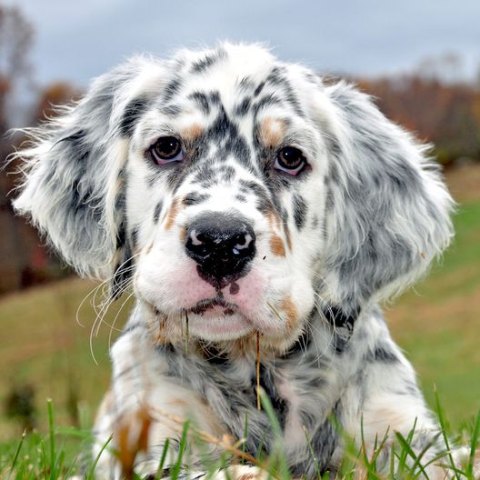
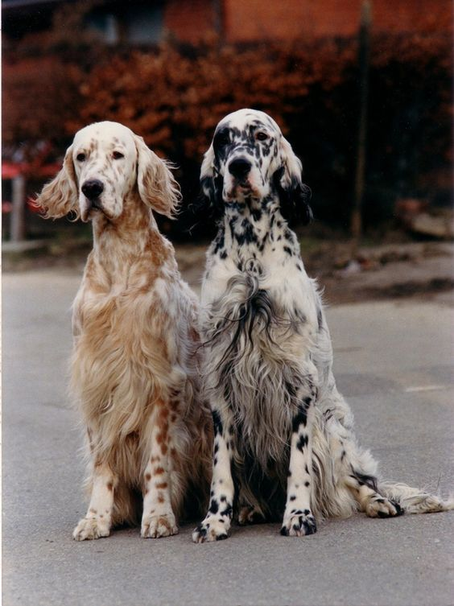
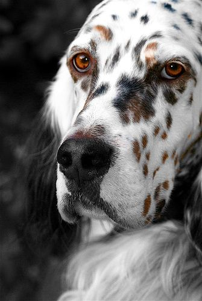

The English Setter is a medium-size breed of dog. It is part of the setter group, which includes the red Irish Setters, Irish Red and White Setters, and black-and-tan Gordon Setters. The mainly white coat has long silky fringes on the back of the legs, under the belly and on the tail. The coat features flecks of colour (known as ticking), and the different colour varieties are referred to as 'belton'. As a gun dog, it is used to hunt for game such as quail, pheasant, and grouse. It is sometimes referred to as the Laverack or Llewellin Setter as these were famous strains of the breed during the major development period in the 19th century. Those from hunting stock are generally of a finer build and with less coat than those bred for show exhibition.
  